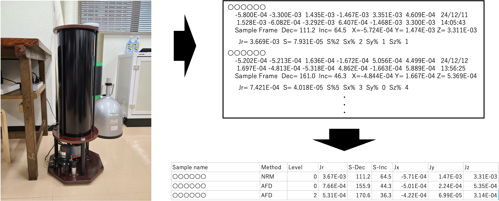
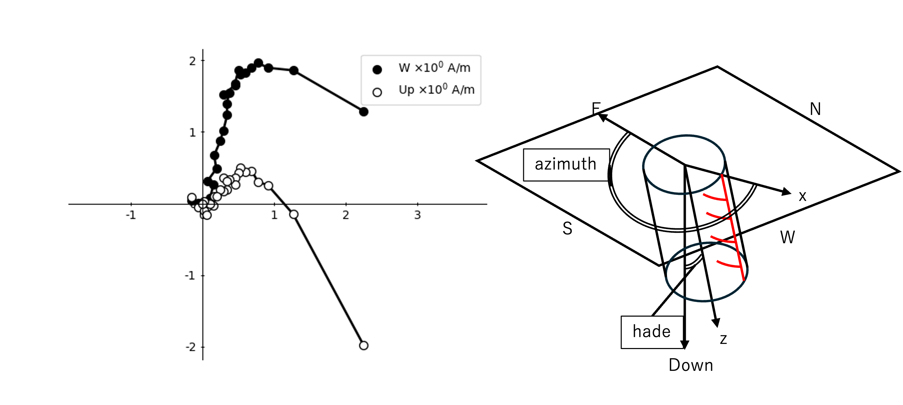
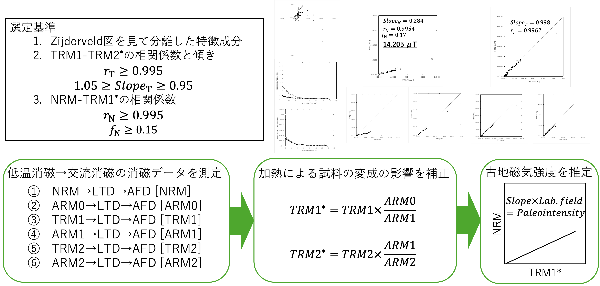
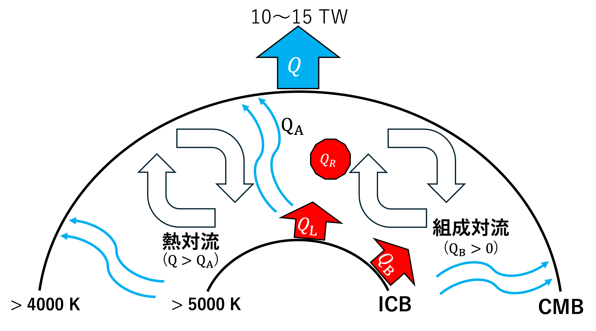

大学院で地球の磁場変動についてシミュレーション解析を用いて研究中。
困難な状況やトラブルにも動じず、
迅速かつ適切に対処できます。
論文の分析やシミュレーションを通じ
課題解決への筋道を導きます。
チーム内で積極的に意見交換を行い
共に試行錯誤して前進します。
理科大岩石磁気研究室のスピナー磁力計から出力される生の測定データを、Excelや各種解析プログラムで即座に活用できる標準形式へ変換する自動化ツールです。フォーマットのパース（解析）を自動化することで、手作業によるデータ転記ミスを完全に排除し、実験データの整理効率を大幅に向上させました。

消磁実験データを岩石磁気学で必須となる「ザイダーベルト投影図（Zijderveld plot）」として自動描画するプログラムです。試料の採取方位（走向・傾斜）を入力するだけで、実験室座標系から地理座標系への座標変換を自動で行い、磁場成分方向を正確にマッピングする機能を実装しています。

LTD-DHT Shaw method（Tsunakawa et al. 1997; Yamamoto et al. 2003）の消磁データから、古地磁気強度を自動計算するプログラムです。最小二乗法を用いた主成分解析（PCA）や相関係数の算出といった統計処理を実装。さらに、学術的な信頼性を担保するため、先行研究（Yamamoto and Tsunakawa, 2005）の厳格な選定基準を満たしているかをシステムが自動判定するアルゴリズムを組み込んでいます。

Lister (2003) の理論に基づき、現在の中心温度や自転速度などの観測データ、およびコアの熱伝導率やコアマントル境界熱流量の推定値から、外核の温度変化や内核半径の成長を計算する数値シミュレータです。40億年規模の熱史計算を行うことで、数値ダイナモシミュレーションの入力に必要となる制御パラメータの年代的な導出を可能にしました。
